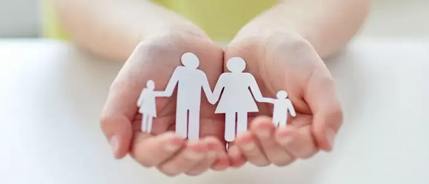
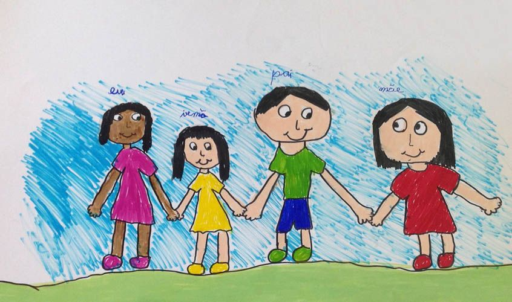

A adoção é um processo legal que permite que uma pessoa ou um casal assuma a paternidade ou maternidade de uma criança ou adolescente, criando um vínculo jurídico e afetivo, como se fosse uma relação biológica. Ao adotar, os pais adotivos ganham todos os direitos e deveres dos pais biológicos, enquanto a criança adquire todos os direitos de um filho, incluindo herança e sobrenome.
O objetivo principal da adoção é oferecer à criança ou ao adolescente um ambiente familiar seguro, estável e afetuoso. Para isso, os pais adotivos passam por um processo de avaliação e preparação, seguindo as leis do país. No Brasil, por exemplo, o processo de adoção é regulamentado pelo Estatuto da Criança e do Adolescente (ECA) e supervisionado pela Vara da Infância e Juventude.
A adoção ocorre em diferentes situações, como quando os pais biológicos não têm condições de criar o filho ou em casos de destituição do poder familiar. A prática de adoção não só forma novas famílias, mas também oferece a muitas crianças a oportunidade de crescer em um lar estruturado, com melhores chances de desenvolvimento e futuro.